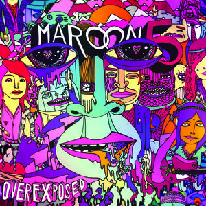
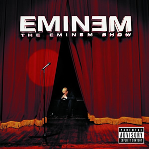

Imagine Dragons
- Imagine Dragons is an American rock band from Las Vegas, Nevada. Imagine Dragons' lineup consists of lead vocalist Dan Reynolds, guitarist Wayne Sermon, bassist Ben McKee, and drummer Daniel Platzman.
The Beatles
- The Beatles were an English rock band, formed in Liverpool in 1960. With members John Lennon, Paul McCartney, George Harrison and Ringo Starr, they became widely regarded as the foremost and most influential act of the rock era

Maroon 5
- Maroon 5 is an American pop rock band that originated in Los Angeles, California. Before the current group was established, the original four members, Adam Levine, Jesse Carmichael Mickey Madden and...

Justin Bieber
- Justin Drew Bieber is a Canadian singer and songwriter. After a talent manager discovered him through his YouTube videos covering songs in 2007 and signed to RBMG, Bieber released his debut EP, My World, in late 2009.

Eminem
- Marshall Bruce Mathers III, known professionally as Eminem, is an American rapper, songwriter, record producer, and actor from Detroit, Michigan.